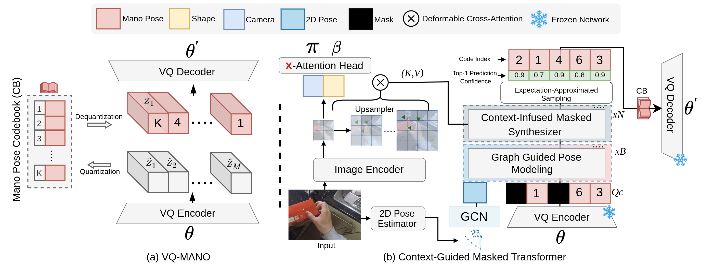

MMHMR: Generative Masked Modeling for Hand Mesh Recovery
anonymous
MMHMR DEMO
The MMHMR demo highlights our method for achieving accurate 3D hand mesh reconstructions from monocular images. Key to our approach is Uncertainty-Guided Sampling (UGS), which iteratively samples high-confidence pose tokens based on their probabilistic distributions, ensuring precise and reliable 3D reconstructions. Here, we show only the initial pose estimates from UGS for 5 iterations.
MMHMR Training Phase
MMHMR consists of two key components: (1) a Pose Tokenizer that encodes 3D hand poses into a sequence of discrete tokens within a latent space, and (2) an Image-Conditioned Masked Transformer that models the probabilistic distributions of these tokens, conditioned on the input image and a partially masked token sequence.

MMHMR Training Phase
MMHMR consists of two key components: (1) a Pose Tokenizer that encodes 3D hand poses into a sequence of discrete tokens within a latent space, and (2) an Image-Conditioned Masked Transformer that models the probabilistic distributions of these tokens, conditioned on the input image and a partially masked token sequence.
Our Inference Strategy
yle="font-size: 1.2em;">Our inference strategy comprises two key stages: (1) Uncertainty-Guided Sampling, which iteratively samples high-confidence pose tokens based on their probabilistic distributions, and (2) 2D Pose-Guided Refinement, which fine-tunes the sampled pose tokens to further minimize 3D reconstruction uncertainty by ensuring consistency between the 3D body mesh and 2D pose estimates.
State-of-the-Art Comparison
State-of-the-art (SOTA) methods, utilize vision transformers to recover 3D hand meshes from single images. However, the

Qualitative Results on Challenging Poses
Qualitative results of our approach on challenging poses from the LSP dataset..

More Results on Challenging Pose
This figure showcases qualitative results of our MMHMR model on challenging poses. These results demonstrate the model's ability to accurately reconstruct complex 3D poses even in scenarios further highlighting the robustness and effectiveness of our approach.